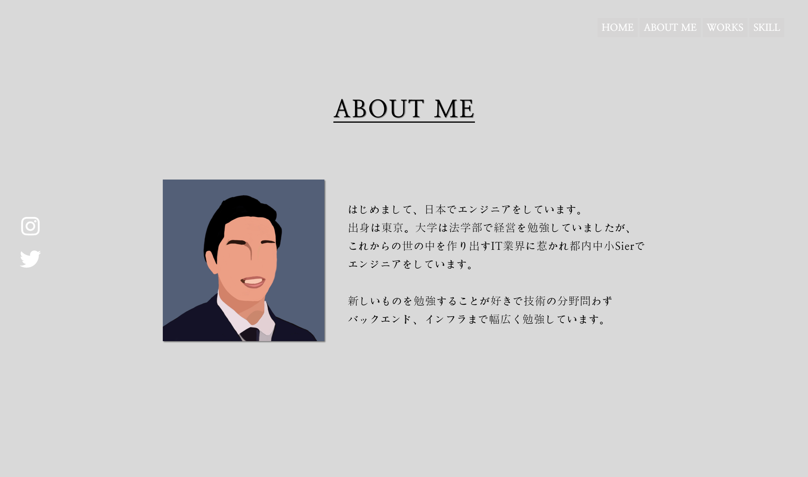
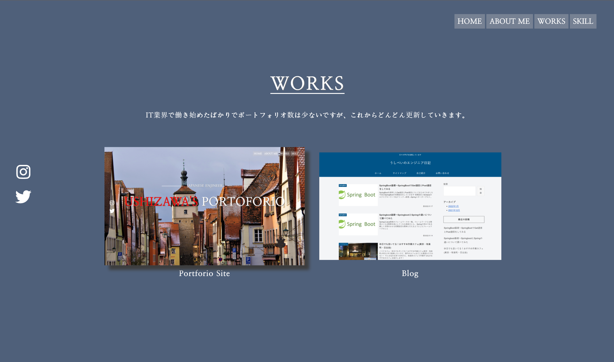
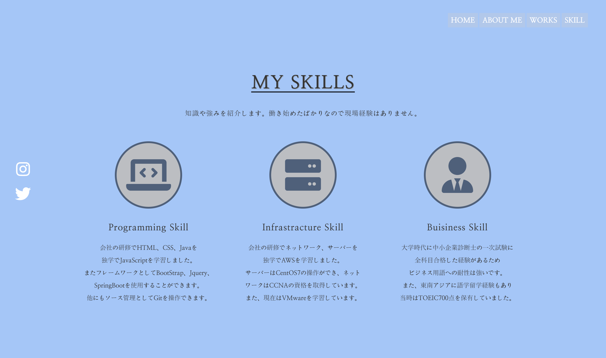

JAPANESE ENJINEER
USHIZAWA'S PORTFOLIO
ABOUT ME
はじめまして、牛澤哲平です。
出身は東京。大学は法学部で会社法を学んでました。
これからの社会をつくるITの世界に惹かれて、
都内Sierでエンジニアをしています。
好奇心旺盛な性格なので技術の分野問わず
バックエンド、インフラまで幅広く学習しています。
WORKS
始めたばかりでポートフォリオ数は少ないですが、これからどんどん更新していきます。

Portfolio Site
Blog
SKILLS
知識や強みを紹介します。働き始めたばかりなので現場経験はありません。
使用できる言語はJava、CSS、HTML、
JavaScriptです。フレームワークはBootStrap、
jQuery、SpringBootが使用できます。
また、ソース管理としてGitを操作できます。
独学で習得した知識が多いですが、先輩方に
に教わりながら技術を磨いています。
新卒研修でネットワークとサーバーの
ひととおりの知識は修得しています。
また、クラウドの知識としてAWSで
簡単な基盤構築をすることができます。
現在は新たな知識として
VMwareを学習しています。
大学時代に中小企業診断士の一次試験に
全科目合格した経験があるため
ビジネスの基礎知識は身に付いています。
また、東南アジアに語学留学経験もあり
当時はTOEIC700点を保有しています。
USHIZAWA'S PORTFORIO
私が制作した初めてのポートフォリオサイトです。
作成したサイトはAWSを使用して公開しています。
またコードはGitHub上でも公開しています。
使用した技術
HTML、CSS、JavaScript、jQuery、AWS、GitHub


